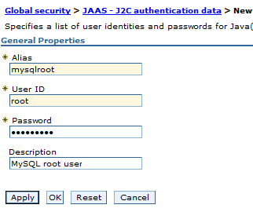
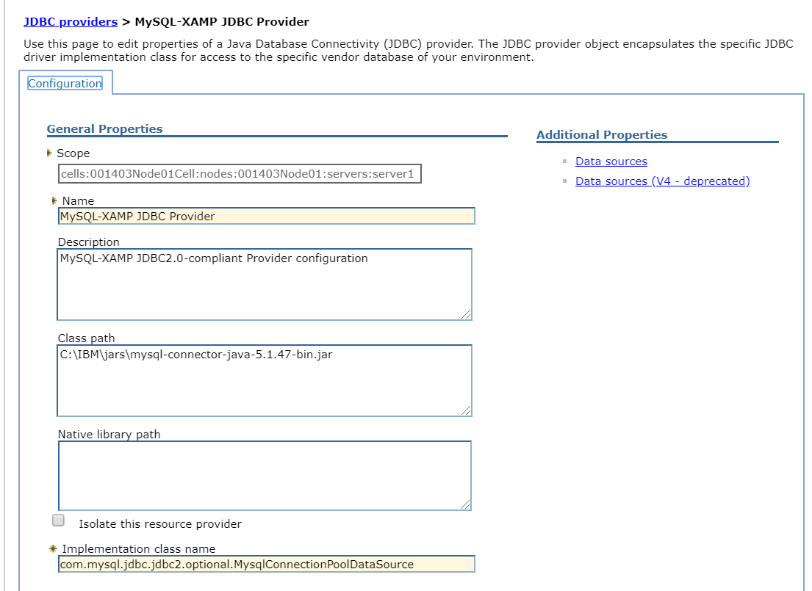
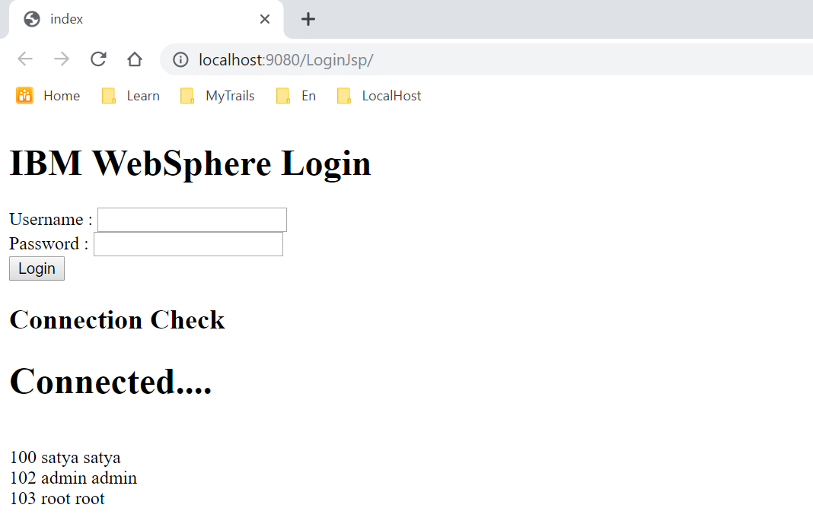

IBM MySQL Datasource configuration & Example
Creating a data source involves the following processes:
Creating a JAAS J2C Authentication
To create a JAAS J2C authentication, follow these steps:
-
Go to WebSphere Administration Console > Security > Global Security.
-
Expand Java Authentication and Authorization Service > click J2C authentication data **> click **New.
-
Provide your MySQL database user details shown below: 
You must enter your MySQL database alias, user name and password in Alias, User ID and Password.
-
Click OK : A screen appears to save the master configuration.
-
Click Save.
Creating a JDBC Provider
To create a JDBC provider, follow these steps:
-
Go to Resources > JDBC, and click the JDBC Provider.
-
Select your server scope. The sope name may appear as Node=XXXXNode01,** Server=server1**.
-
Click New.
-
Create a JDBC provider with name MySQL JDBC Provider.
-
Set User defined as Database type.
-
Download MySQL connector j jar & provide class path :
C:\\IBM\\jars\\mysql-connector-java-5.1.47-bin.jar -
Set
com.mysql.jdbc.jdbc2.optional.MysqlConnectionPoolDataSourceas Implementation class name**.

-
Click Next.
-
Set Database class path to the location of MySQL JDBC connector jar file.
-
Click Next and review your inputs.
-
Click Finish.
Creating a Data Source
To create a Data source, follow these steps:
-
Go to Resources > JDBC, and click Data sources.
-
Select you server Scope. The scope name may appear as Node=XXXXNode01,** Server=server1**.
-
Click New.
-
Provide ConsoleDBDS as Datasource Name.
-
Provide jdbc/ConsoleDB as JNDI Name (you must configure the same JNDI name in the syncconsole.properties file).
-
Click Next.
-
Select an existing JDBC provider, for example, MySQL JDBC Provider (created in Creating a JDBC Provider).
-
Click Next.
-
Choose the data store helper class name. Retain the default values.
-
Click Next.
-
Setup security aliases shown below, choose already created JAAS – J2C Authentication Data here:
Component-managed authentication alias: XXXNode01/mysqlroot
Mapping configuration alias: DefaultPrincipalMapping
Container-managed authentication alias: XXXNode01/mysqlroot.
- Click Next, review changes, and then click Finish.
Setting Custom Properties of Data Source
For user defined data sources, you must provide database details (Server Name, Port, Database Name, User and Password) under custom properties of a data source.
To set the custom properties of a data source, follow these steps:
-
Click MySQL Data source to open it.
-
Click Custom Properties under Additional Properties section.
-
Click New and set the following properties. If Customer property already exists with the below names, edit them and provide values.
serverName = localhost (the host name or IP address of the MySQL server) port = 3306 (MySQL database port) databaseName = syncconsole (the name of the syncconsole database) user = root (the user name of the MySQL server) password = rootpassword (the password associated with the user name)Note : You can use the URL property to specify complete JDBC URL of syncconsole database shown below instead of above all properties:
URL = jdbc:mysql://localhost:3306/syncconsole?user=root&password=rootpassword
- Restart the WebSphere application server for the changes to take effect.
JDBC Example
public class DBConnection {
public static Connection getConnection() {
Connection con =null;
try {
Context ctx = new InitialContext();
DataSource ds = (DataSource) ctx.lookup("jdbc/userdb");
con = ds.getConnection("root", "root");
}catch (Exception e) {
// TODO: handle exception
e.printStackTrace();
}
return con;
}
}
UI page - db.jsp
<h2>Connection Check</h2>
<%
Connection con = DBConnection.getConnection();
if (con != null) {
out.write("<h1>Connected....</h1>");
try {
Statement stmt = con.createStatement();
ResultSet rs = stmt.executeQuery("select * from user");
while (rs.next())
out.write("<br/>" + rs.getInt(1) + " " + rs.getString(2) + " " + rs.getString(3));
} catch (Exception e) {
e.printStackTrace();
}
} else {
out.write("<h1>Failed....</h1>");
}
%>
